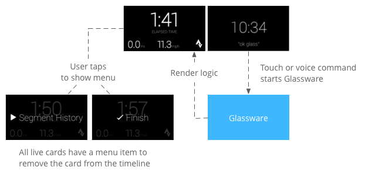
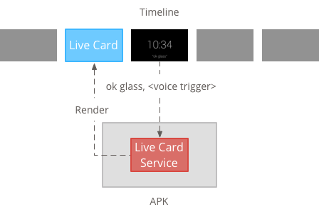
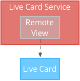
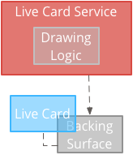
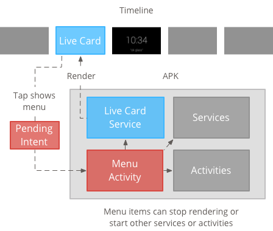

Live cards appear in the present section of the timeline and display information that is relevant at the current time.
Live cards are great for when users are actively engaged in a task, but want to periodically check Glass for supplemental information. For example, checking their time on a run every few minutes or controlling a music player when they want to skip or pause a song.
If this is your first time developing for Glass, read the Ongoing Task guide first. That document goes over how to build a complete Glassware with a live card, following our design best practices.
Live cards provide a way for cards to persist in the present section of the timeline for as long as they are relevant. Unlike static cards, live cards do not persist in the timeline, and users explicitly remove them after they are done with them.
Note: The Glass system also removes live cards during a reboot or when the system is low on resources unless you use LiveCard.attach() [TODO ADD LINK].

Users typically start live cards by speaking a voice command at the main menu, which starts a background service that renders the card. They can then tap the card to show menu items that can act on the card, such as dismissing it from the timeline.
Live cards are designed for ongoing tasks that users can jump in and out of frequently, such as a display that shows the running status of an action, an animated map during navigation, or a music player.
Another benefit of live cards is that they are well suited for UIs that require real-time interaction with users and real-time updates to the UI.
When using live cards, the timeline still has control over the user experience, so swiping forward or backward on a live card navigates the timeline instead acting on the live card itself. In addition, the screen turns on and off based on how the system behaves (after 5 seconds with no user interaction or during a head nudge up).
However, live cards have access to many of the same features an immersion does, such as sensor or GPS data. This lets you still create compelling experiences while allowing users to stay in the timeline experience to do other things, such as check messages.

Live cards require a long running context to own them for the entire time that they are visible, so manage them in a background service.
You can then publish and render a live card as soon as the service starts or in response to other events that the service monitors. You can render live cards with low frequency (once every few seconds), or high frequency (up to as many times as the system can refresh).
When the live card is no longer relevant, destroy the service to stop rendering.
Low-frequency rendering is limited to a small set of Android views and can only update the display once every few seconds.
It’s a simple way to create live cards with simple content that doesn’t require constant rendering or frequent updates.

High frequency rendering lets you use more of the options available in the Android graphics framework.
The system gives you the actual backing surface of the live card that you draw directly onto using 2D views and layouts or even complex 3D graphics with OpenGL.

Low frequency rendering requires a UI supplied by a RemoteViews object, which supports the following subset of Android layouts and views:
FrameLayoutLinearLayout`RelativeLayoutGridLayoutAdapterViewFlipperAnalogClockButtonChronometerGridViewImageButtonImageViewListViewProgressBarStackViewTextViewViewFlipperUse low frequency rendering when:
Keep in mind:
PendingIntent declared with setAction() for the timeline to publish the card.setViews() on the card with the updated RemoteViews object before publishing again.To create low-frequency live cards:
<TextView
android:id="@+id/home_team_name_text_view"
android:layout_width="249px"
android:layout_height="wrap_content"
android:layout_alignParentRight="true"
android:gravity="center"
android:textSize="40px" />
<TextView
android:id="@+id/away_team_name_text_view"
android:layout_width="249px"
android:layout_height="wrap_content"
android:layout_alignParentLeft="true"
android:gravity="center"
android:textSize="40px" />
<TextView
android:id="@+id/away_score_text_view"
android:layout_width="249px"
android:layout_height="wrap_content"
android:layout_alignLeft="@+id/away_team_name_text_view"
android:layout_below="@+id/away_team_name_text_view"
android:gravity="center"
android:textSize="70px" />
<TextView
android:id="@+id/home_score_text_view"
android:layout_width="249px"
android:layout_height="wrap_content"
android:layout_alignLeft="@+id/home_team_name_text_view"
android:layout_below="@+id/home_team_name_text_view"
android:gravity="center"
android:textSize="70px" />
<TextView
android:id="@+id/footer_text"
android:layout_width="wrap_content"
android:layout_height="wrap_content"
android:layout_alignParentBottom="true"
android:layout_alignParentLeft="true"
android:layout_marginBottom="33px"
android:textSize="26px" />
import java.util.Random;
import com.google.android.glass.timeline.LiveCard;
import com.google.android.glass.timeline.LiveCard.PublishMode;
import android.app.PendingIntent;
import android.app.Service;
import android.content.Intent;
import android.os.Handler;
import android.os.IBinder;
import android.widget.RemoteViews;
public class LiveCardService extends Service {
private static final String LIVE_CARD_TAG = "LiveCardDemo";
private LiveCard mLiveCard;
private RemoteViews mLiveCardView;
private int homeScore, awayScore;
private Random mPointsGenerator;
private final Handler mHandler = new Handler();
private final UpdateLiveCardRunnable mUpdateLiveCardRunnable =
new UpdateLiveCardRunnable();
private static final long DELAY_MILLIS = 30000;
@Override
public void onCreate() {
super.onCreate();
mPointsGenerator = new Random();
}
@Override
public int onStartCommand(Intent intent, int flags, int startId) {
if (mLiveCard == null) {
// Get an instance of a live card
mLiveCard = new LiveCard(this, LIVE_CARD_TAG);
// Inflate a layout into a remote view
mLiveCardView = new RemoteViews(getPackageName(),
R.layout.main_layout);
// Set up initial RemoteViews values
homeScore = 0;
awayScore = 0;
mLiveCardView.setTextViewText(R.id.home_team_name_text_view,
getString(R.string.home_team));
mLiveCardView.setTextViewText(R.id.away_team_name_text_view,
getString(R.string.away_team));
mLiveCardView.setTextViewText(R.id.footer_text,
getString(R.string.game_quarter));
// Set up the live card's action with a pending intent
// to show a menu when tapped
Intent menuIntent = new Intent(this, MenuActivity.class);
menuIntent.addFlags(Intent.FLAG_ACTIVITY_NEW_TASK |
Intent.FLAG_ACTIVITY_CLEAR_TASK);
mLiveCard.setAction(PendingIntent.getActivity(
this, 0, menuIntent, 0));
// Publish the live card
mLiveCard.publish(PublishMode.REVEAL);
// Queue the update text runnable
mHandler.post(mUpdateLiveCardRunnable);
}
return START_STICKY;
}
@Override
public void onDestroy() {
if (mLiveCard != null && mLiveCard.isPublished()) {
//Stop the handler from queuing more Runnable jobs
mUpdateLiveCardRunnable.setStop(true);
mLiveCard.unpublish();
mLiveCard = null;
}
super.onDestroy();
}
/**
* Runnable that updates live card contents
*/
private class UpdateLiveCardRunnable implements Runnable{
private boolean mIsStopped = false;
/*
* Updates the card with a fake score every 30 seconds as a demonstration.
* You also probably want to display something useful in your live card.
*
* If you are executing a long running task to get data to update a
* live card(e.g, making a web call), do this in another thread or
* AsyncTask.
*/
public void run(){
if(!isStopped()){
// Generate fake points.
homeScore += mPointsGenerator.nextInt(3);
awayScore += mPointsGenerator.nextInt(3);
// Update the remote view with the new scores.
mLiveCardView.setTextViewText(R.id.home_score_text_view,
String.valueOf(homeScore));
mLiveCardView.setTextViewText(R.id.away_score_text_view,
String.valueOf(awayScore));
// Always call setViews() to update the live card's RemoteViews.
mLiveCard.setViews(mLiveCardView);
// Queue another score update in 30 seconds.
mHandler.postDelayed(mUpdateLiveCardRunnable, DELAY_MILLIS);
}
}
public boolean isStopped() {
return mIsStopped;
}
public void setStop(boolean isStopped) {
this.mIsStopped = isStopped;
}
}
@Override
public IBinder onBind(Intent intent) {
/*
* If you need to set up interprocess communication
* (activity to a service, for instance), return a binder object
* so that the client can receive and modify data in this service.
*
* A typical use is to give a menu activity access to a binder object
* if it is trying to change a setting that is managed by the live card
* service. The menu activity in this sample does not require any
* of these capabilities, so this just returns null.
*/
return null;
}
}
High frequency rendering lets you draw directly on the backing Surface of the live card.
Use high frequency rendering when:
Keep in mind:
PendingIntent declared with setAction().GLRenderer if you are rendering OpenGL and DirectRenderingCallback for all other cases.To create live cards with standard Android views and drawing logic:
DirectRenderingCallback, Implementing the callbacks in these interfaces let you carry out actions during important events of the live card’s surface lifecycle.Note: The callback methods in these interfaces are not invoked on the main UI thread.
public class LiveCardRenderer implements DirectRenderingCallback {
// About 30 FPS.
private static final long FRAME_TIME_MILLIS = 33;
private SurfaceHolder mHolder;
private boolean mPaused;
private RenderThread mRenderThread;
@Override
public void surfaceChanged(SurfaceHolder holder, int format,
int width, int height) {
// Update your views accordingly.
}
@Override
public void surfaceCreated(SurfaceHolder holder) {
mPaused = false;
mHolder = holder;
updateRendering();
}
@Override
public void surfaceDestroyed(SurfaceHolder holder) {
mHolder = null;
updateRendering();
}
@Override
public void renderingPaused(SurfaceHolder holder, boolean paused) {
mPaused = paused;
updateRendering();
}
/**
* Start or stop rendering according to the timeline state.
*/
private void updateRendering() {
boolean shouldRender = (mHolder != null) && !mPaused;
boolean rendering = mRenderThread != null;
if (shouldRender != rendering) {
if (shouldRender) {
mRenderThread = new RenderThread();
mRenderThread.start();
} else {
mRenderThread.quit();
mRenderThread = null;
}
}
}
/**
* Draws the view in the SurfaceHolder's canvas.
*/
private void draw() {
Canvas canvas;
try {
canvas = mHolder.lockCanvas();
} catch (Exception e) {
return;
}
if (canvas != null) {
// Draw on the canvas.
mHolder.unlockCanvasAndPost(canvas);
}
}
/**
* Redraws in the background.
*/
private class RenderThread extends Thread {
private boolean mShouldRun;
/**
* Initializes the background rendering thread.
*/
public RenderThread() {
mShouldRun = true;
}
/**
* Returns true if the rendering thread should continue to run.
*
* @return true if the rendering thread should continue to run
*/
private synchronized boolean shouldRun() {
return mShouldRun;
}
/**
* Requests that the rendering thread exit at the next
opportunity.
*/
public synchronized void quit() {
mShouldRun = false;
}
@Override
public void run() {
while (shouldRun()) {
draw();
SystemClock.sleep(FRAME_TIME_MILLIS);
}
}
}
}
DirectRenderingCallback as the LiveCard SurfaceHolder’s callback. This lets the live card know what logic to use to render itself.// Tag used to identify the LiveCard in debugging logs.
private static final String LIVE_CARD_TAG = "my_card";
// Cached instance of the LiveCard created by the publishCard() method.
private LiveCard mLiveCard;
private void publishCard(Context context) {
if (mLiveCard == null) {
mLiveCard = new LiveCard(this, LIVE_CARD_TAG);
// Enable direct rendering.
mLiveCard.setDirectRenderingEnabled(true);
mLiveCard.getSurfaceHolder().addCallback(
new LiveCardRenderer());
Intent intent = new Intent(context, MenuActivity.class);
mLiveCard.setAction(PendingIntent.getActivity(context, 0,
intent, 0));
mLiveCard.publish(LiveCard.PublishMode.SILENT);
} else {
// Card is already published.
return;
}
}
private void unpublishCard(Context context) {
if (mLiveCard != null) {
mLiveCard.unpublish();
mLiveCard = null;
}
}
GlRenderer [TODO: ADD LINK]. Implementing the callbacks in this interface lets you carry out actions during important events of the live card’s surface lifecycle. This example draws a colored, rotating cube.Note: The callback methods in these interfaces are not invoked on the main UI thread.
import com.google.android.glass.timeline.GlRenderer;
import android.opengl.GLES20;
import android.opengl.Matrix;
import android.os.SystemClock;
import java.util.concurrent.TimeUnit;
import javax.microedition.khronos.egl.EGLConfig;
/**
* Renders a 3D OpenGL Cube on a {@link LiveCard}.
*/
public class CubeRenderer implements GlRenderer {
/** Rotation increment per frame. */
private static final float CUBE_ROTATION_INCREMENT = 0.6f;
/** The refresh rate, in frames per second. */
private static final int REFRESH_RATE_FPS = 60;
/** The duration, in milliseconds, of one frame. */
private static final float FRAME_TIME_MILLIS = TimeUnit.SECONDS.toMillis(1) / REFRESH_RATE_FPS;
private final float[] mMVPMatrix;
private final float[] mProjectionMatrix;
private final float[] mViewMatrix;
private final float[] mRotationMatrix;
private final float[] mFinalMVPMatrix;
private Cube mCube;
private float mCubeRotation;
private long mLastUpdateMillis;
public CubeRenderer() {
mMVPMatrix = new float[16];
mProjectionMatrix = new float[16];
mViewMatrix = new float[16];
mRotationMatrix = new float[16];
mFinalMVPMatrix = new float[16];
// Set the fixed camera position (View matrix).
Matrix.setLookAtM(mViewMatrix, 0, 0.0f, 0.0f, -4.0f, 0.0f, 0.0f, 0.0f, 0.0f, 1.0f, 0.0f);
}
@Override
public void onSurfaceCreated(EGLConfig config) {
// Set the background frame color
GLES20.glClearColor(0.0f, 0.0f, 0.0f, 1.0f);
GLES20.glClearDepthf(1.0f);
GLES20.glEnable(GLES20.GL_DEPTH_TEST);
GLES20.glDepthFunc(GLES20.GL_LEQUAL);
mCube = new Cube();
}
@Override
public void onSurfaceChanged(int width, int height) {
float ratio = (float) width / height;
GLES20.glViewport(0, 0, width, height);
// This projection matrix is applied to object coordinates in the onDrawFrame() method.
Matrix.frustumM(mProjectionMatrix, 0, -ratio, ratio, -1.0f, 1.0f, 3.0f, 7.0f);
// modelView = projection x view
Matrix.multiplyMM(mMVPMatrix, 0, mProjectionMatrix, 0, mViewMatrix, 0);
}
@Override
public void onDrawFrame() {
GLES20.glClear(GLES20.GL_COLOR_BUFFER_BIT | GLES20.GL_DEPTH_BUFFER_BIT);
// Apply the rotation.
Matrix.setRotateM(mRotationMatrix, 0, mCubeRotation, 1.0f, 1.0f, 1.0f);
// Combine the rotation matrix with the projection and camera view
Matrix.multiplyMM(mFinalMVPMatrix, 0, mMVPMatrix, 0, mRotationMatrix, 0);
// Draw cube.
mCube.draw(mFinalMVPMatrix);
updateCubeRotation();
}
/** Updates the cube rotation. */
private void updateCubeRotation() {
if (mLastUpdateMillis != 0) {
float factor = (SystemClock.elapsedRealtime() - mLastUpdateMillis) / FRAME_TIME_MILLIS;
mCubeRotation += CUBE_ROTATION_INCREMENT * factor;
}
mLastUpdateMillis = SystemClock.elapsedRealtime();
}
}
CubeRenderer class as the live card’s renderer.import com.google.android.glass.timeline.LiveCard;
import com.google.android.glass.timeline.LiveCard.PublishMode;
import android.app.PendingIntent;
import android.app.Service;
import android.content.Intent;
import android.os.IBinder;
/**
* Creates a {@link LiveCard} rendering a rotating 3D cube with OpenGL.
*/
public class OpenGlService extends Service {
private static final String LIVE_CARD_TAG = "opengl";
private LiveCard mLiveCard;
@Override
public IBinder onBind(Intent intent) {
return null;
}
@Override
public int onStartCommand(Intent intent, int flags, int startId) {
if (mLiveCard == null) {
mLiveCard = new LiveCard(this, LIVE_CARD_TAG);
mLiveCard.setRenderer(new CubeRenderer());
mLiveCard.setAction(
PendingIntent.getActivity(this, 0, new Intent(this, MenuActivity.class), 0));
mLiveCard.publish(PublishMode.REVEAL);
} else {
mLiveCard.navigate();
}
return START_STICKY;
}
@Override
public void onDestroy() {
if (mLiveCard != null && mLiveCard.isPublished()) {
mLiveCard.unpublish();
mLiveCard = null;
}
super.onDestroy();
}
}
Note: For completeness, here’s the actual Cube class that the CubeRenderer draws.
import android.opengl.GLES20;
import java.nio.ByteBuffer;
import java.nio.ByteOrder;
import java.nio.FloatBuffer;
/**
* Renders a 3D Cube using OpenGL ES 2.0.
*
* For more information on how to use OpenGL ES 2.0 on Android, see the
* <a href="//developer.android.com/training/graphics/opengl/index.html">
* Displaying Graphics with OpenGL ES</a> developer guide.
*/
public class Cube {
/** Cube vertices */
private static final float VERTICES[] = {
-0.5f, -0.5f, -0.5f,
0.5f, -0.5f, -0.5f,
0.5f, 0.5f, -0.5f,
-0.5f, 0.5f, -0.5f,
-0.5f, -0.5f, 0.5f,
0.5f, -0.5f, 0.5f,
0.5f, 0.5f, 0.5f,
-0.5f, 0.5f, 0.5f
};
/** Vertex colors. */
private static final float COLORS[] = {
0.0f, 1.0f, 1.0f, 1.0f,
1.0f, 0.0f, 0.0f, 1.0f,
1.0f, 1.0f, 0.0f, 1.0f,
0.0f, 1.0f, 0.0f, 1.0f,
0.0f, 0.0f, 1.0f, 1.0f,
1.0f, 0.0f, 1.0f, 1.0f,
1.0f, 1.0f, 1.0f, 1.0f,
0.0f, 1.0f, 1.0f, 1.0f,
};
/** Order to draw vertices as triangles. */
private static final byte INDICES[] = {
0, 1, 3, 3, 1, 2, // Front face.
0, 1, 4, 4, 5, 1, // Bottom face.
1, 2, 5, 5, 6, 2, // Right face.
2, 3, 6, 6, 7, 3, // Top face.
3, 7, 4, 4, 3, 0, // Left face.
4, 5, 7, 7, 6, 5, // Rear face.
};
/** Number of coordinates per vertex in {@link VERTICES}. */
private static final int COORDS_PER_VERTEX = 3;
/** Number of values per colors in {@link COLORS}. */
private static final int VALUES_PER_COLOR = 4;
/** Vertex size in bytes. */
private final int VERTEX_STRIDE = COORDS_PER_VERTEX * 4;
/** Color size in bytes. */
private final int COLOR_STRIDE = VALUES_PER_COLOR * 4;
/** Shader code for the vertex. */
private static final String VERTEX_SHADER_CODE =
"uniform mat4 uMVPMatrix;" +
"attribute vec4 vPosition;" +
"attribute vec4 vColor;" +
"varying vec4 _vColor;" +
"void main() {" +
" _vColor = vColor;" +
" gl_Position = uMVPMatrix * vPosition;" +
"}";
/** Shader code for the fragment. */
private static final String FRAGMENT_SHADER_CODE =
"precision mediump float;" +
"varying vec4 _vColor;" +
"void main() {" +
" gl_FragColor = _vColor;" +
"}";
private final FloatBuffer mVertexBuffer;
private final FloatBuffer mColorBuffer;
private final ByteBuffer mIndexBuffer;
private final int mProgram;
private final int mPositionHandle;
private final int mColorHandle;
private final int mMVPMatrixHandle;
public Cube() {
ByteBuffer byteBuffer = ByteBuffer.allocateDirect(VERTICES.length * 4);
byteBuffer.order(ByteOrder.nativeOrder());
mVertexBuffer = byteBuffer.asFloatBuffer();
mVertexBuffer.put(VERTICES);
mVertexBuffer.position(0);
byteBuffer = ByteBuffer.allocateDirect(COLORS.length * 4);
byteBuffer.order(ByteOrder.nativeOrder());
mColorBuffer = byteBuffer.asFloatBuffer();
mColorBuffer.put(COLORS);
mColorBuffer.position(0);
mIndexBuffer = ByteBuffer.allocateDirect(INDICES.length);
mIndexBuffer.put(INDICES);
mIndexBuffer.position(0);
mProgram = GLES20.glCreateProgram();
GLES20.glAttachShader(mProgram, loadShader(GLES20.GL_VERTEX_SHADER, VERTEX_SHADER_CODE));
GLES20.glAttachShader(
mProgram, loadShader(GLES20.GL_FRAGMENT_SHADER, FRAGMENT_SHADER_CODE));
GLES20.glLinkProgram(mProgram);
mPositionHandle = GLES20.glGetAttribLocation(mProgram, "vPosition");
mColorHandle = GLES20.glGetAttribLocation(mProgram, "vColor");
mMVPMatrixHandle = GLES20.glGetUniformLocation(mProgram, "uMVPMatrix");
}
/**
* Encapsulates the OpenGL ES instructions for drawing this shape.
*
* @param mvpMatrix The Model View Project matrix in which to draw this shape
*/
public void draw(float[] mvpMatrix) {
// Add program to OpenGL environment.
GLES20.glUseProgram(mProgram);
// Prepare the cube coordinate data.
GLES20.glEnableVertexAttribArray(mPositionHandle);
GLES20.glVertexAttribPointer(
mPositionHandle, 3, GLES20.GL_FLOAT, false, VERTEX_STRIDE, mVertexBuffer);
// Prepare the cube color data.
GLES20.glEnableVertexAttribArray(mColorHandle);
GLES20.glVertexAttribPointer(
mColorHandle, 4, GLES20.GL_FLOAT, false, COLOR_STRIDE, mColorBuffer);
// Apply the projection and view transformation.
GLES20.glUniformMatrix4fv(mMVPMatrixHandle, 1, false, mvpMatrix, 0);
// Draw the cube.
GLES20.glDrawElements(
GLES20.GL_TRIANGLES, INDICES.length, GLES20.GL_UNSIGNED_BYTE, mIndexBuffer);
// Disable vertex arrays.
GLES20.glDisableVertexAttribArray(mPositionHandle);
GLES20.glDisableVertexAttribArray(mColorHandle);
}
/** Loads the provided shader in the program. */
private static int loadShader(int type, String shaderCode){
int shader = GLES20.glCreateShader(type);
GLES20.glShaderSource(shader, shaderCode);
GLES20.glCompileShader(shader);
return shader;
}
}
When you publish a live card with LiveCard.publish(), you pass it a parameter to control whether or not it has focus immediately.
To have the timeline jump to the card immediately after publishing, use LiveCard.PublishMode.REVEAL. To publish the card silently and make users navigate to the card on their own, use LiveCard.PublishMode.SILENT.
In addition, the LiveCard.navigate() method lets you jump to the card after it’s been published. For example, if users try to start your live card from the main voice menu and it is already started, you can jump to the live card with this method.
Live cards cannot show their own menu system, so you need to create an activity to display a menu for the live card.
The menu activity can then have items for stopping the live card, starting an immersion, or any other action you want to carry out. You can also add system settings activities, such as volume control, as a menu item. For more information, see Starting settings.
Note: All live cards should have a Stop menu item so that users can remove the live card from the timeline when they are done with it.

Creating menu resources is the same as on the Android platform, but follow these guidelines for Glass:
<menu xmlns:android="http://schemas.android.com/apk/res/android">
<item
android:id="@+id/menu_item_1"
android:title="@string/Menu_Item_1" <!-- must have "Stop" menu item -->
android:icon="@drawable/menu_item_1_icon" /> <!-- white on transparent icon -->
</menu>
You must define a menu activity that your live card invokes when users tap on it.
Override the following Activity callback methods to properly create, show, and dismiss menus in your menu activity:
onCreateOptionsMenu() inflates the XML menu resource.onAttachedToWindow() shows the menu when the activity is in focus.onPrepareOptionsMenu() shows or hides menu items if required. For example, you can show different menu items based on what users are doing. For example, you can show different menu items based on some contextual data.onOptionsItemSelected() handles user selection.onOptionsMenuClosed() to finish the activity, so that it no longer appears over the live card.You must finish the activity here so it is properly finished when the menu is closed by a selection or by a swipe down.
/**
* Activity showing the options menu.
*/
public class MenuActivity extends Activity {
@Override
public void onAttachedToWindow() {
super.onAttachedToWindow();
openOptionsMenu();
}
@Override
public boolean onCreateOptionsMenu(Menu menu) {
MenuInflater inflater = getMenuInflater();
inflater.inflate(R.menu.stopwatch, menu);
return true;
}
@Override
public boolean onOptionsItemSelected(MenuItem item) {
// Handle item selection.
switch (item.getItemId()) {
case R.id.stop:
stopService(new Intent(this, StopwatchService.class));
return true;
default:
return super.onOptionsItemSelected(item);
}
}
@Override
public void onOptionsMenuClosed(Menu menu) {
// Nothing else to do, closing the activity.
finish();
}
}
To be consistent with Glass style, make the menu activity translucent, so that the live card is still visible below the menu:
res/values/styles.xml file and declare a style that makes the activity’s background transparent:<resources>
<style name="MenuTheme" parent="@android:style/Theme.DeviceDefault">
<item name="android:windowBackground">@android:color/transparent</item>
<item name="android:colorBackgroundCacheHint">@null</item>
<item name="android:windowIsTranslucent">true</item>
<item name="android:windowAnimationStyle">@null</item>
</style>
</resources>
AndroidManifest.xml file, assign the theme to the menu activity:<?xml version="1.0" encoding="utf-8"?>
<manifest ... >
...
<application ... >
...
<activity
android:name=".MenuActivity"
android:theme="@style/MenuTheme"
...>
</activity>
</application>
</manifest>
Provide a PendingIntent for the card’s action using setAction(). The pending intent is used to start the menu activity when users tap on the card:
Intent menuIntent = new Intent(this, MenuActivity.class);
mLiveCard.setAction(PendingIntent.getActivity(this, 0, menuIntent, 0));
mLiveCard.publish(LiveCard.PublishMode.REVEAL); // or SILENT
MenuActivity supports contextual voice commands:// Initialize your LiveCard as usual.
mLiveCard.setVoiceActionEnabled(true);
mLiveCard.publish(LiveCard.PublishMode.REVEAL); // or SILENT
MenuActivity to support invocation through the voice flow:/**
* Activity showing the options menu.
*/
public class MenuActivity extends Activity {
private boolean mFromLiveCardVoice;
private boolean mIsFinishing;
@Override
protected void onCreate(Bundle savedInstanceState) {
super.onCreate(savedInstanceState);
mFromLiveCardVoice =
getIntent().getBooleanExtra(LiveCard.EXTRA_FROM_LIVECARD_VOICE, false);
if (mFromLiveCardVoice) {
// When activated by voice from a live card, enable voice commands. The menu
// will automatically "jump" ahead to the items (skipping the guard phrase
// that was already said at the live card).
getWindow().requestFeature(WindowUtils.FEATURE_VOICE_COMMANDS);
}
}
@Override
public void onAttachedToWindow() {
super.onAttachedToWindow();
if (!mFromLiveCardVoice) {
openOptionsMenu();
}
}
@Override
public boolean onCreatePanelMenu(int featureId, Menu menu) {
if (isMyMenu(featureId)) {
getMenuInflater().inflate(R.menu.stopwatch, menu);
return true;
}
return super.onCreatePanelMenu(featureId, menu);
}
@Override
public boolean onPreparePanel(int featureId, View view, Menu menu) {
if (isMyMenu(featureId)) {
// Don't reopen menu once we are finishing. This is necessary
// since voice menus reopen themselves while in focus.
return !mIsFinishing;
}
return super.onPreparePanel(featureId, view, menu);
}
@Override
public boolean onMenuItemSelected(int featureId, MenuItem item) {
if (isMyMenu(featureId)) {
// Handle item selection.
switch (item.getItemId()) {
case R.id.stop_this:
stopService(new Intent(this, StopwatchService.class));
return true;
}
}
return super.onMenuItemSelected(featureId, item);
}
@Override
public void onPanelClosed(int featureId, Menu menu) {
super.onPanelClosed(featureId, menu);
if (isMyMenu(featureId)) {
// When the menu panel closes, either an item is selected from the menu or the
// menu is dismissed by swiping down. Either way, we end the activity.
isFinishing = true;
finish();
}
}
/**
* Returns {@code true} when the {@code featureId} belongs to the options menu or voice
* menu that are controlled by this menu activity.
*/
private boolean isMyMenu(int featureId) {
return featureId == Window.FEATURE_OPTIONS_PANEL ||
featureId == WindowUtils.FEATURE_VOICE_COMMANDS;
}
}
Check out the contextual voice commands guide for more information.
A few helper methods are available to modify the look and behavior of menus. See MenuUtils for more information.
Portions of this page are reproduced from work created and shared by Google and used according to terms described in the Creative Commons 4.0 Attribution License.